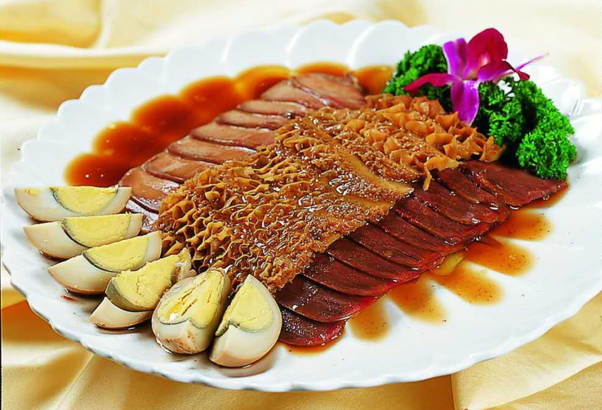

凉菜卤菜具有调整口味，增进食欲的作用，食之令人胃口大开，深受各族人民的喜爱。加工制作凉菜 ，可选用的原材料极为广泛。菜品内容也十分丰富，其制作的口味也可灵活多变，虽选料精细，但加工制作工艺较为简便方便。 不需要特殊设备，只用一般厨具即可，是一种低成本投入，而利润颇丰的经营菜品。
凉菜卤菜培训内容主要为：①凉菜卤菜的选料，清洗的初步加工和。②凉菜卤菜等主料及辅料的全部制作。 ③凉菜卤菜的成品制作技术。
凉菜卤菜培训品种主要有：卤牛肉、卤牛肚、卤香干、卤猪蹄、红油猪耳、黑木耳、西兰花、腐竹、海带丝、凉拌黄瓜、凉拌皮蛋等。
主要培训的万州烤鱼分为以下几种：香辣烤鱼、泡椒烤鱼、麻辣烤鱼、豆豉烤鱼、蒜香烤鱼、豆花烤鱼。
卤菜学习价格：2888可以全学。